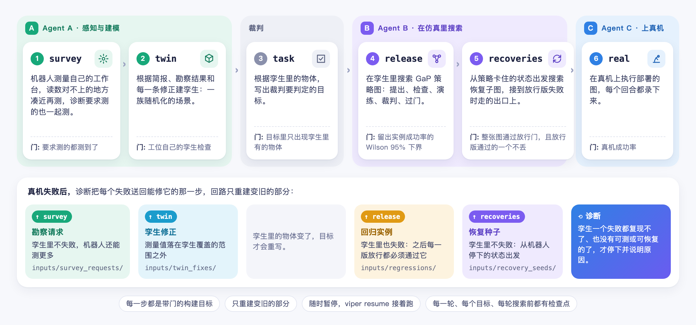
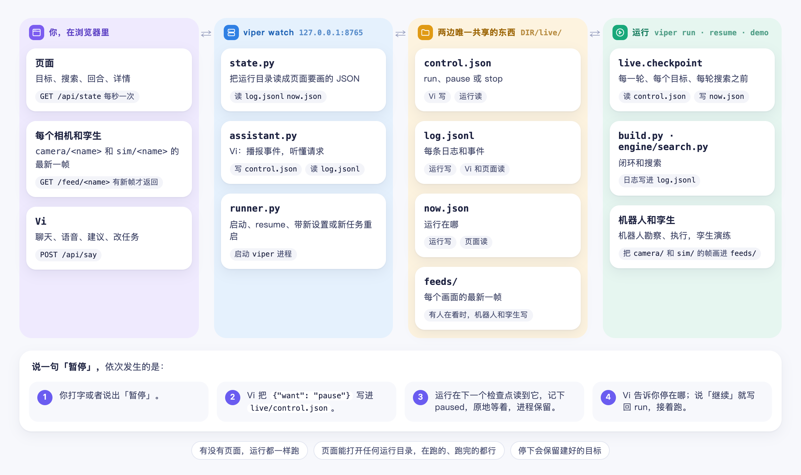
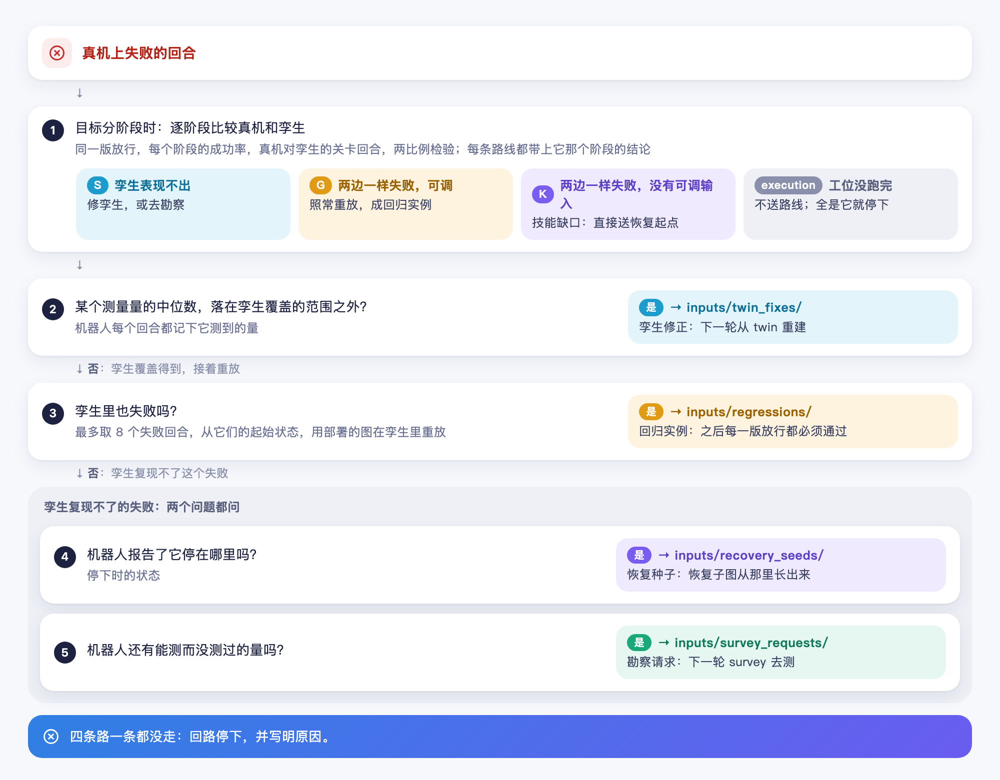

VIPER 使用指南
VIPER 是一个给机器人策略用的 make。你写一份 brief：任务是什么、在哪个仿真器里搜索、在哪个机器人上执行。VIPER 按顺序构建六个目标，每个目标后面有一道关卡。真机失败时，诊断把每个失败送回能修它的阶段，只重建受影响的部分，再试一轮。产物是一张 Graph-as-Policy（GaP）策略图，仿真和真机跑的是同一份。
- 1. 总流程
- 2. 安装
- 3. 离线演示
- 4. 日常命令
- 5. 实时监控页面和助手 Vi
- 6. 写一份 brief
- 7. 在 GPU 上跑 RoboSimStudio
- 8. 借用技能库里的技能
- 9. 运行目录里有什么
- 10. 真机失败之后：诊断的四条路
- 11. 基准套件
- 12. 扩展
- 13. 常见问题
1. 总流程

| 目标 | 做什么 | 关卡 |
|---|---|---|
survey |
建 twin 之前，机器人先测工作台；被要求时测得更多 | 要求测的都测到了 |
twin |
用 brief 的估计、测量结果和历次修正，建一族随机化场景 | 仿真自己的 twin 检查，以及重建门 |
task |
根据 twin 里有哪些物体写目标 | 目标只提到 twin 里有的物体 |
release |
在 twin 里搜索策略图 | 留出实例上成功率的 Wilson 95% 下界 ≥ 0.8 |
recoveries |
从策略卡住的状态出发，长出恢复子图，接到失败出口上 | 整张图重新过发布关卡，且不比 release 差 |
real |
部署的图在机器人上执行 | 成功率 ≥ 0.8 |
每个目标的构建键由它的版本和所有依赖的内容摘要组成。键没变就跳过，变了就重建，下游跟着重建。诊断唯一做的事是往 inputs/ 下的某个目录追加一条记录，依赖它的目标因此变旧，下一轮只重建这些。
孪生自己的回路：视角问题还是方法问题
主动感知重建出孪生；孪生不够准，就继续感知，直到够准，然后才开始 task 和 release。会保存所见的勘察返回 views（每一帧：相机名、画幅、内参 [fx, fy, cx, cy]、OpenCV 轴下的位姿 [x, y, z, qw, qx, qy, qz]，以及每个物体的掩码、深度和在这一帧里读了哪些量）和 readings（每个量的每一次读数：数值、误差、相机、方法）。仿真能 look_twin 的话，就从这些相机渲染孪生，孪生的关卡（viper/stages/look.py）在每个视角里逐个物体比对：
| 读数 | 门槛（默认） |
|---|---|
| 掩码重叠 IoU | ≥ 0.6 |
| 中心偏移，物体所在深度上的毫米（没有深度时用像素） | ≤ 10 mm（12 px） |
| 尺寸比，面积比的平方根 | 1.15 倍以内 |
| 深度，孪生的中位数减相机的 | ≤ 10 mm |
它还检查勘察本身：同一个量从两个视角读出来差得超过两者误差之和的 spread（1）倍、数值落在任务声明的 ranges 之外、机器人（survey_checks）或 brief 声明的检查不过。所有读数写进 targets/twin/<key>/match.json 和比对图 look.svg（每个相机的画面、孪生的渲染、两者的轮廓，以及从这个相机读出的数，对不上的标红）；viper watch 在 look 画面上显示比对图，Vi 每一轮都会说。
关卡没过，先分清毛病出在哪，再送出去：
| 原因 | 规则 | 送到 | 上限 |
|---|---|---|---|
| 比对本身定出了数值 | 仿真的渲染说出了这个值应该是多少 | twin_fixes |
回路的总轮数 |
| 方法 | 同一个量从两个看得清的视角读出来差得比误差大；或者孪生在每个看得清的视角里都偏向同一边（都大、都小、都近、都远，或者在世界坐标里往同一个方向偏），至少两个视角；或者多看了几个角度，物体的偏差还剩原来的 0.8 以上 | perception_fixes：每个量换成机器人声明的、还没试过的下一种方法，写明换掉的是哪个、哪些视角、读数和数字；孪生用勘察存下的画面重新测，机器人不动 |
method_rounds（2） |
| 视角 | 其余情况：物体太远（不到 64 像素宽）、被画面截掉、视角自己说被挡住或斜着看、看得清的视角不到两个，或者在一些看得清的视角里不对、另一些里又对 | survey_requests，每个物体带一条 look：先 closer，再 more，以及在哪些相机里对不上 |
look_rounds（2） |
一个视角对某个物体来说，视角那一行的规则一条都不成立，就算看得清。不能 remeasure 的机器人遇到方法问题，仍按原来的做法请它再看一次。账本里的 measured 事件记录孪生用的每个量是哪种方法测的，是勘察时测的还是用存下的画面重新测的。
只从几个视角看，台面总有一部分是不确定的，重建门不要求确定。它的结果按顺序是：
| 结果 | 什么时候 | 怎么办 |
|---|---|---|
| 送回 | 上表的某个原因，且对应输入还有轮数 | 用回来的东西重建孪生 |
| 带范围通过 | 读数对不上，但按中位数建的孪生在每个相机里都在门槛内；或者没东西可送之后，某个数值还是偏 | 每个量变成一个范围：覆盖它的读数和误差、它的中间值、画面反推出的值，再截到任务声明的 ranges 里；数值是 [lo, hi]，类别（颜色）是几个候选。孪生把 {"ranges": ...} 当最后一条修正再建一次，写出 ranges.json，变体覆盖这些范围；账本里的 ranges 事件写明原因 |
| 结构矛盾，不过 | 没东西可送之后：孪生少了相机看到的物体、某个值在边界内放不进任何范围，或者声明的检查给出 kind = "structure" 的问题（个数、支撑、顺序） |
重建门不过，回路停下并说明原因 |
孪生带着范围（来自勘察、修正或上一次重建门）时，按中间值比对；范围内某个值能消掉的偏差（画面反推出的大小或位置，在门槛内）算范围解释了，不算失败，look 图上写明是哪个范围解释的。
viper/core/ranges.py 是所有孪生共用的表示：spanning、clip、union、contains、nominal，以及 variants(ranges, count, key)：先是中间值那个变体，然后在每个范围里按种子抽，同一个 key 抽出来一样。仿真器用它抽变体（cube_on_pad 已经改用它）；诊断跳过类别范围，因为读数不会落在一组颜色之外。
评审和场景：孪生完整吗？
度量比对只量任务里的物体，看不出桌子到墙前就到头了、孪生少画了一条手臂、台面上还放着一台笔记本。所以重建门每一轮还从每个真实相机渲染孪生，把相机画面和渲染并排放到页面上（look/<camera>，标着轮次），问视觉语言模型哪里不一样（viper/stages/critic.py）。
每个相机给评审看的（Pair）：真实画面、孪生的渲染、轮次、孪生里有什么（物体和场景，一行一个），以及度量比对从这个相机读出的数。评审的回答（Critique）里，where 是真实画面里的像素框 [x0, y0, x1, y1] 或点 [x, y]：
{"matches": false,
"differences": [{"thing": "wall_back", "kind": "backdrop",
"where": [0, 0, 640, 260],
"evidence": "white panels in a grey frame; the twin has none",
"fix": {"backdrops": [{"name": "wall_back", "side": "back",
"rgb": [228, 226, 218]}]}}]}
kind 是 missing、extra、pose、size、colour、texture 或 backdrop；fix 是一层场景、{"remove": [名字]}、{"measured": {...}}，画面给不出数值时是一句话。同时问几位评审（Gemini、Astra）时，几位都说到的差异算 confirmed；只有一部分评审说的降级，卡不住关。每条差异按顺序取第一条成立的路，写在页面和日志里：
| 路 | 什么时候 | 怎么办 |
|---|---|---|
embodiment |
手臂、手腕、夹爪、手指：拍这一帧时机器人的构型是本体感知，随帧记下，几何来自它的模型，所以从来不是感知问题 | joints：渲染没用这一帧记下的关节，就告诉孪生（twin_fixes）；calibration：用了，手臂还是落在别处，就把手臂上已知的点（基座、腕部相机、指尖）投进相机，和它们在画面里的位置比，超过 calibration_px（20）就用存下的画面重新测相机或基座（perception_fixes，calibrate）；state：手指张开多少之类，算解释掉。孪生缺的手臂按记下的关节加上。从不卡关 |
metric |
度量比对量的物体的位姿或尺寸 | 度量比对说了算，由它自己送 |
dropped |
评审说缺的东西，孪生就在它指的地方画着，或者度量比对看得到 | 不处理 |
explained |
孪生带着范围的量的尺寸或颜色 | 不处理 |
twin_fixes |
评审给了孪生能直接用的数值，而且用得上：颜色、要删的东西、一整面墙（size 或 pose 得给位置或尺寸） |
直接改仿真：{"scenery": 一层, "source": "critic"} |
perception_fixes |
评审没给这种数值（墙多远、笔记本的框、桩的颜色），而勘察从这个相机存下的画面在这条差异的 where 框里有它 |
机器人不动，在存下的 RGB-D 画面里测：{"measure": [{"thing", "group", "camera", "box", "what", "given"}]}，孪生建之前先用 viper/core/frames.py 测（否则用机器人为 scenery 声明的方法） |
survey_requests |
存下的画面里没有（不在任何视角里、那里没有深度、只给了一个点、或者测过一次还不对），机器人现在能看 | 主动感知：机器人再看一次，{"quantities": ["scenery"], "look": {thing: {"how": "scenery", "cameras", "why"}}}，勘察把看到的放进 scenery 返回 |
needs_look |
同上，但机器人现在看不了（回放、没上电） | 列出该拍哪些视角（match.json 的 needs_look）；这一轮等机器人 |
unrouted |
什么都定不了 | 列出来 |
只有任务碰得到的东西能卡关：任务里的物体、它们放着的支撑面、工作区里的障碍物。场景的外观（墙板、百叶窗、光线）和机器人本体只做提示：记下来，评审给了数值就告诉孪生，从不卡关。孪生重建、再问评审，最多 critic_rounds（2）轮。每位评审都说每个相机一致、度量也过了，重建门才过；轮数用完之后，要再看才能定的卡关差异让孪生等机器人（不算失败），卡关的任务物体缺了或多了按结构不过，其余都过，列出来。
门里的一轮。 重建门先比度量、定下度量的结果；机器人有评审的话，再拿孪生渲染过的每个相机去问它们。每个相机的并排图写到 targets/twin/<key>/look/<camera>.critic.svg，也发到页面的 look/<camera> 画面：左边真实画面，右边渲染，标题里是轮次，每条差异按它的路的颜色框出来，下面一行行写着评审、路和情况（arm_right (missing, gemini+astra) -> embodiment/joints: the robot itself; update the sim）。日志里每条差异一行，带原因。送出去的差异每个输入最多合成一条（"source": "critic"，带轮次和它对应的差异）。评审还有轮数（critic_rounds，送过东西的轮才算）、每个输入也还有自己的轮数（看是 look_rounds，测是 method_rounds）时，重建门以 route 不过，孪生的回路把它们追加进去：要看就先重建勘察；孪生建之前先在勘察存下的画面里按框测（scenery_measured.json），把 calibrate 交给机器人的 remeasure；然后再渲染、再问评审。有东西要送时，度量过了也不算过。没东西可送之后，要看才能定的卡关差异让结果变成 waiting：回路立刻停下，不耗轮数，viper run 以 4 退出。match.json 的 critic 记着这一轮：round、critics、matches、每个相机的 critiques 和定好路的 differences（每条带 route、case、because、entry、confirmed 和 blocking）、routes、needs_look 和 remaining。Vi 每一轮按路说一遍，比如"第 2 轮：gemini、astra 把真实画面和孪生渲染并排看，找到 2 处不同：仿真里还缺 arm_right (missing, joints)、wall_back (backdrop)，已加上。重新建孪生，再渲染比一次。"
假工作台用两轮走遍每条路（tests/unit_tests/simulation/test_fake.py）。它的机器人接受 scenery = true（或者叠在工作台上的一层，比如压在左臂下的线盘）和 said：每位评审逐轮说什么，说完之后由假评审自己比两张图（simulation/fake/scenery.py）。第 1 轮两位评审都说缺后墙，并给了整面墙，直接告诉仿真；都说缺右臂、左臂姿态不对，归 embodiment，按这一帧记下的关节画；都说桌子尺寸不对但没给数，就在存下的 RGB-D 画面里按框测；都指着左臂压住的线盘露出的一圈边，一个点测不出范围，于是让机器人再看一次，勘察读到了它；只有一位说缺笔记本，可孪生就在那里画着，丢掉。孪生重建，第 2 轮两位都说一致。
场景是这些修正落脚的地方：孪生场景里的 scenery（viper/core/scenery.py），单位是米，孪生的世界坐标，z 朝上，颜色是 0-255 的 rgb：
{"support": {"name": "table", "x_m": [-0.6, 0.6], "y_m": [-0.3, 0.45], "top_m": 0.0,
"rgb": [176, 124, 82], "texture": "table.png", "texture_m": [0.3, 0.1]},
"backdrops": [{"name": "wall_back", "side": "back", "distance_m": 0.45,
"span_m": [-0.8, 0.8], "z_m": [0.0, 0.9], "rgb": [228, 226, 218]}],
"arms": [{"name": "left", "joints": [0.0, 1.2, -0.9, 0.0, 0.3, 0.0], "gripper": 0.4,
"base_m": [-0.33, -0.25, 0.0], "rgb": [24, 24, 24]},
{"name": "right", "joints": [0.0, 1.2, -0.9, 0.0, 0.3, 0.0], "base_m": [0.33, -0.25, 0.0],
"rgb": [24, 24, 24]}],
"distractors": [{"name": "laptop", "what": "laptop", "x_m": [-0.75, -0.45],
"y_m": [-0.35, -0.15], "z_m": [0.0, 0.02], "rgb": [40, 40, 44]}]}
backdrops 站在某一侧（back +y、front -y、right +x、left -x），离原点 distance_m。appearance 记任务物体自己的样子（{"board": {"rgb": [31, 38, 40]}}），hidden 记后端自己会画、但被删掉的名字（比如目标标记）。场景一层层叠：brief 或后端的默认、勘察测到的 scenery、然后每条修正的 {"scenery": 一层}；一层可以改字段、加名字、remove 名字（scenery.of_fixes(base, fixes)）。新东西缺了画它必需的字段（墙的 side 和 distance_m、盒子的 x_m、y_m、z_m），由 Scenery.lacks(layer) 指出来，去测，不去猜。
在存下的画面里按框测（viper/core/frames.py）用照片补场景。colour 是框里像素颜色的中位数，边缘去掉。extent 把框里的深度经相机反投到世界坐标：墙取这些点最薄的水平方向定在哪一侧，沿这个方向的中位数定距离，散布定宽和高；盒子（笔记本）取高出它所在平面的点定范围；支撑面取顶面上的点定范围和高度。在 Hanoi 那一帧上，这样测出后墙 0.62 m 远、笔记本在 x -0.42 到 -0.13 m，机器人不用动。
机器人以 vlm(prompt, images, provider) -> text 和 critics（要问的评审）提供评审（它的 hub 的 vlm.query；密钥留在主机的 env 文件里）；没有 vlm 的机器人不做评审。它随每帧记下每条手臂的关节（view["joints"]），说明现在能不能看（looks_now），也可以说出手臂上已知的点出现在画面哪里（view["points"]）。为了能在画面里测，每个视角留着彩色画面（view["image"]，PNG 或 JPEG；画面是示意图时用 view["rgb"]）、16 位 PNG 的深度，单位毫米（view["depth"]），以及相机的内参和位姿（camera["K"] 和 camera["T"]，相机到世界，x 向右、y 向下、z 向前；或者 intrinsics 和 pose）。会测场景的机器人在勘察的 can 里列出 scenery（在存下的画面上测的方法列在 measures 里），并返回 survey["scenery"]。这些都列在 ../embodiments/README.md。后端在 look_twin 和 see_twin 里画 scenery（../simulation/README.md）。
2. 安装
需要 Python 3.11 或 3.12，以及 uv。VIPER 本身只用标准库，仿真器在各自的 Python 环境里运行，VIPER 从不 import 它们。
git clone https://github.com/runtime-si/VIPER.git
cd VIPER
uv venv --python 3.11 && source .venv/bin/activate
uv pip install -e ".[test]"
viper parts
一次运行由几部分拼成，每部分放在它角色对应的目录里：真机在 embodiments/，替真机站位的世界在 benchmarks/，物理后端在 simulation/，任务和为它写图的作者在 tasks/。viper parts 列出装好的部分，以及每份规格的问题：
benchmark cube_suite A simulation built from the true bench plays the robot: a Panda puts a cube on a pad
benchmark libero A LIBERO task stands in for the robot: its own start states, judged by its own success test
benchmark toy The toy world stands in for the robot, its arm off by a bias the brief misses
simulation fake A toy cube-to-plate world in plain Python, for tests and the demo
simulation mujoco MuJoCo through robosuite: the twin is a LIBERO task's scene, opened from its task file
simulation pybullet PyBullet on the CPU: a Panda picks a cube by camera and places it on a pad
simulation robosimstudio RoboSimStudio on Newton: a Panda picks a cube by camera and places it on a pad
simulation sapien SAPIEN on PhysX 5: a Panda picks a cube by camera and places it on a pad
task pick_place Pick a thing up and put it somewhere, from an instruction in words
| 仿真 | 引擎 | 还需要什么 |
|---|---|---|
fake |
纯 Python | 不需要别的；演示和测试用 |
robosimstudio |
RoboSimStudio（Newton / MuJoCo-Warp） | GPU，以及带 GaP 的 RoboSimStudio 检出 |
pybullet |
PyBullet，CPU | pybullet、numpy、GaP |
sapien |
SAPIEN 3（PhysX 5） | sapien、pybullet_data、numpy、GaP，以及支持 Vulkan 的 GPU |
mujoco |
LIBERO 的场景（MuJoCo，经 robosuite 1.4） | LIBERO 检出、robosuite==1.4.1、MuJoCo、GaP 和 EGL（见第 11 节） |
robosimstudio、pybullet、sapien 摆的是同一个世界（Panda 用相机找方块、放到垫子上），工具名一致，所以一张图能在任意一个上跑，也可以在 A 里搜索、在 B 上执行。那里的"真机"是 cube_suite 基准，real = "cube_suite:<仿真>"：用真实场景参数建的同一个仿真器。libero 基准让一个公开基准站在真机的位置上，由 mujoco 来演，从基准自己的初始状态出发，用基准自己的成功判定打分。目前还没有真机随仓库发布；embodiments/README.md 是真机要满足的接口。
跑测试：
uv run pytest -q tests
3. 离线演示
fake 仿真和 toy 基准是一个纯 Python 的玩具世界，带一个脚本化的作者。整个闭环不到一秒：
viper demo --out runs/demo
日志（节选）：
INFO round 1 of 3
INFO building survey
INFO twin passed its gate tcp_bias_mm=0
INFO building release
INFO round 0: best is n0000 (seed), 68/100 on the gate
INFO round 1: best is n0003 (recovery), 94/100 on the gate
INFO release passed its gate lower_bound=0.8752 n=100 rate=0.94 successes=94
INFO building real
WARNING real: real success 0.65 is below 0.8
INFO routed to twin_fixes: tcp_bias_mm measured 6.509, twin covers [-2.5, 2.5]
INFO round 2 of 3
INFO survey is up to date
INFO building twin
INFO twin passed its gate tcp_bias_mm=6.509
INFO task is up to date
INFO building release
INFO n0005 from topology is invalid: calls sim.get_object_pose, which the robot and the twin do not both provide
INFO release passed its gate lower_bound=0.8137 n=100 rate=0.89 successes=89
INFO real passed its gate successes=20 n=20 rate=1
这段日志按顺序是这样的：
- 第一轮。 twin 以为工具点没有偏差，搜出来的策略在 twin 里 94/100，到了机器人上只有 65%。
- 诊断。 机器人每个回合都读了工具点偏差，中位数是 6.509 mm，而 twin 只覆盖 [-2.5, 2.5]，于是记一条 twin 修正。
- 第二轮。
survey和task不受影响，跳过；twin按 6.509 mm 重建，release重新搜索。 - 安全检查。 搜索过程中，作者提议了一个调用
sim.get_object_pose（仿真专有的真值）的编辑。它在运行前就被拒绝了，因为机器人没有这个工具。 - 第二次真机。 20/20。
接着：
viper status runs/demo # 每个目标的状态
viper show runs/demo # 写 runs/demo/report/index.html
open runs/demo/report/index.html
4. 日常命令
| 命令 | 作用 |
|---|---|
viper run BRIEF --out DIR |
构建 brief 的全部目标，真机失败时闭环 |
viper run BRIEF --out DIR --until release |
只构建到某个目标；闭环只在 real 处才会闭合 |
viper resume DIR |
用运行目录里保存的 brief 再跑一次，建好的目标会跳过 |
viper resume DIR --brief NEW.toml |
换一份 brief 再跑，只重建受影响的目标 |
viper resume DIR --instruction "任务" |
换一个任务再跑，survey 保留（第 5 节） |
viper run BRIEF --out DIR --watch |
同上，但在实时页面下运行，有助手 Vi（见第 5 节）；demo、resume 也可以加 |
viper watch DIR |
打开一个运行目录的实时页面，在跑没跑都行 |
viper status DIR |
每个目标的当前构建、关卡结果，以及有哪些输入 |
viper show DIR |
把每次构建、关卡、路由、搜索树和视频写成 DIR/report/index.html |
viper export DIR --to PKG |
导出部署的策略和全部历史，成为一个 viper.package/1 目录 |
viper import PKG --out DIR |
把包载入运行目录，然后用 viper resume DIR 继续 |
viper import PKG --out DIR --brief OTHER.toml |
换一个场景：只带走策略，作为新运行的搜索起点 |
viper parts |
列出装好的各部分，以及每份规格的问题 |
viper hub search --index HUB --part NAME |
列出这个仿真能用的技能，加 --real 则是机器人能用的；加 --all 同时列出不能用的及原因 |
viper hub lock GRAPH --index HUB |
给一张图写 skills.lock |
viper hub publish DIR --to HUB/skills |
把一次运行找到的恢复子图写成技能库的技能包 |
run 和 resume 都有 --rounds N（闭环最多几轮，默认 3）；run、resume 和 demo 都有 --instruction，用它代替 brief 里的任务。任何命令加 -v 会输出调试日志。
几种常见用法：
# 先只在仿真里搜到 release，看看再说
viper run brief.toml --out runs/x --until release
viper show runs/x
viper resume runs/x # 满意了再上机器人
# 中断了（关了终端、断了网），接着跑
viper resume runs/x
# 改了 brief 里的设置，只重建受影响的部分
viper resume runs/x --brief brief.toml
# 把这次的策略带到另一个场景
viper export runs/x --to pkgs/x
viper import pkgs/x --out runs/y --brief other.toml
viper resume runs/y
运行每一轮真机失败之后、以及结束时，会把自己存成一个版本包（DIR/versions/v0001、v0002……），任何一个都可以再 viper import。
5. 实时监控页面和助手 Vi
加 --watch，命令就在一个实时页面下运行，页面在 http://127.0.0.1:8765/：
viper demo --out runs/demo --watch # 演示放慢到一分钟左右，方便看
viper run brief.toml --out runs/x --watch # 正式运行，旁边开着页面
viper resume runs/x --watch # 同上，从停下的地方接着跑
viper watch runs/x # 打开任意运行目录的页面，在跑没跑都行
viper watch runs/x --feed camera=http://robot:8080/stream.mjpg # 带上机器人的相机
页面实时显示：
- 仿真：孪生正在演练，当前这一批实例每个一格，标出成功或失败；
- 机器人相机：机器人一侧画的画面、相机的 MJPEG 视频流（
--feed camera=URL，或者页面上的“Add a stream URL”），或者这台电脑的摄像头； - 运行到哪了：六个目标已建好、正在建、过期还是失败，以及关卡读数；运行停在哪个检查点；诊断写下的输入；
- 成功率：每个回合一格，绿色成功、红色失败；来自正在建的目标，或者机器人最近一次运行；
- 搜索：每一轮最好的图在关卡上的成功率和 Wilson 下界，每个试过的编辑是否通过筛选；
- 详情，每样一个标签页：要部署的策略图（标出每个节点上的失败次数）、每个方块在工作台上的起点和终点、仿真器录下的视频、诊断走过的路由，以及日志。
旁边是助手 Vi。她会一路播报运行在干什么（新一轮开始、某个目标在建、搜索找到更好的图、某个编辑被拒、真机失败以及原因、诊断走了哪条路），也接受你的请求，打字或者说话都行（浏览器支持语音的话）：
| 你说 | 会发生什么 |
|---|---|
| 「现在怎么样」 | 运行到哪了，最新的关卡读数 |
| 「暂停」 | 运行在下一个检查点停住，进程保留 |
| 「继续」 | 暂停的接着跑；已经停下的就 resume |
| 「停下」 | 运行在下一个检查点退出，建好的都保留 |
| 「立刻停下」 | 直接结束进程，正在建的目标作废 |
| 「只跑到 release」 | 用 --until release 接着跑 |
| 「真机跑 10 个回合」「搜索 8 轮」「real_episodes = 5」 | 用改过设置的 brief 重启，只重建受影响的部分 |
| 「任务：把方块放进碗里」，或者点页面顶部的任务 | 用 --instruction 重启：survey 保留，重建任务和它改动到的部分 |
| 「为什么失败」 | 每一轮失败的诊断 |
| 「regressions 是什么意思」 | 解释 VIPER 的术语 |
改任务。 点页面顶部的任务或旁边的铅笔，输入新任务，按「按这个任务跑」；或者对 Vi 说「任务：……」。运行在下一个检查点停下，再用新任务接着跑，和终端里的 viper resume DIR --instruction "……" 一样。survey 不读任务，所以机器人不会重新测量；任务重新写，release 和恢复子图为新任务重新搜索，部署的图变了才会再上真机。做不到的任务会停在说明原因的那道门上：在 fake 仿真上，「把方块放进碗里」过不了 task 的门（the goal names objects the twin lacks: ['bowl']），「把盘子放到方块上」过不了 release 的裁判自检。
英文的说法（"how is it going"、"pause"、"go on" 等）同样能用。
页面和运行在哪里接上
页面和运行之间只通过 DIR/live/ 下的文件交流：有没有页面，运行都一样跑；页面也可以打开任何运行目录，在跑的、跑完的都行。

检查点就是运行里三处对 live.checkpoint 的调用：闭环每一轮之前和每个目标之前（viper/build.py），以及搜索每一轮之前（viper/engine/search.py）。你提的任何要求都在这里生效。以「暂停」为例：
- Vi 往
live/control.json写{"want": "pause"}；页面把前面那个检查点标成“已请求”。 - 运行到了下一个检查点就读这个文件，记一条日志
paused at round 2, target release，在live/now.json里写上paused，然后每秒读两次文件等着。什么都不会丢：进程、搜索和模型都原样留着。 - 页面把检查点标成“停住”，Vi 告诉你停在哪。这期间页面上什么都可以看。
- 「继续」写
{"want": "run"}，运行从同一行接着跑。「停下」写{"want": "stop"}：运行抛出Halted，建好的目标全部保留，退出码是 3；之后说「继续」就用viper resume接着跑。改设置（「真机跑 10 个回合」）或改任务的请求也是这样先停下，再带着改动重启，只重建改动影响到的部分。
暂停或停下的运行会在 live/now.json 里写明停在哪。运行是页面的子进程，在自己的会话里，日志写在 DIR/live/run.log；在页面的终端按 Ctrl-C，会让运行在下一个检查点停下。运行没有连到自己的目录之前（命令行会连上），检查点什么也不做，所以直接调用各阶段的代码永远不会卡住。
实时画面
仿真或机器人用 live.frame("sim", data, ".svg", **meta) 画一个画面：最新一帧写到 live/feeds/sim.frame，说明写到 live/feeds/sim.json。画画要花时间，所以只有 live.watched() 说最近十秒有页面读过这个运行时才画；没人看的运行什么都不画。页面请求 /feed/sim?after=<时间>，服务器把请求挂着，等到有更新的帧才返回，所以帧一写好就能看到，页面也不用一直轮询图片。
玩具世界两个画面都画。PyBullet、SAPIEN 和 RoboSimStudio 在各自的 worker 里画渲染图，worker 作为任务跑在本机或者通过 ssh 跑在别的机器上；worker 画的帧一出现就被复制回运行的 live/feeds/。相机画面按页面的优先顺序取：机器人一侧画的帧、视频流地址、这台电脑的摄像头；有不止一个来源时，画面上方有个开关可以选。
机器人声明的每台相机（它的本体或基准里的 [cameras.<名字>]）在下面各占一行：这台相机看到的，feed camera/<名字>，旁边是孪生从同一位姿、用同一内参渲染出的画面，feed sim/<名字>。发布由 VIPER 负责（viper/core/cameras.py）：和 VIPER 同进程、能 see(camera) 的机器人，在勘察和真机运行时被询问；能 see_twin(twin, cameras) 的仿真，每建好一个孪生就把它显示出来；作业 worker 里的 bench 在复位后、每次工具调用后和回合结束时被要求 see 每台相机，写到 live/<侧>/<名字>.jpg，由执行器转发。重建门拿孪生对照相机时，把它比的每个视角成对放上去：勘察存下的画面在 camera/<名字>，孪生从同一视角渲染的画面在 sim/<名字>，标着第几轮；一台相机有几个视角时，两边都放最后一个。读不出来的相机直接跳过；有人看永远不会让运行失败。
页面只监听 127.0.0.1；要看 GPU 机器上的运行，把端口转发过来（ssh -L 8765:127.0.0.1:8765 gpu），在本机打开。
Vi 默认说英文；--lang zh 或 VIPER_LANG=zh 让她一开始就说中文，页面顶部的语言按钮随时可以切换。想让大模型来回答，就指定一个 OpenAI 兼容接口上的模型：Vi 把运行状态交给它，执行它返回的操作；模型出错时退回规则：
export VIPER_CHAT_MODEL=gpt-4o-mini
export VIPER_CHAT_URL=https://api.openai.com/v1 # 默认值
export VIPER_CHAT_KEY=... # 或 OPENAI_API_KEY
6. 写一份 brief
brief 是一个 TOML 文件，例子在 benchmarks/*/brief*.toml。
instruction = "put the cube on the pad" # 必填：任务
task = "pick_place" # 任务；作者是这个任务为该仿真准备的那个
sim = "robosimstudio" # 必填：在哪个仿真里搜索
real = "cube_suite:robosimstudio" # 必填：机器人，一个本体或一个基准
# embodiment = "panda" # 可选：机器人本体，默认取真机一侧的
# models = "my_pkg.authors:LlmAuthor" # 可选：用这个作者代替任务自带的
# goal = "(once ...)" # 可选：直接给目标，否则按模板写
[twin.cube] # 对场景的估计；诊断会修正它
size_mm = 50.0
[[stages]] # 可选：目标的各个阶段，按先后（见第 10 节）
name = "grasp"
holds = "held(cube)" # 机器人观测到的状态上的谓词
by = ["pick_sg"] # 朝这个阶段干活的子图
[[stages]]
name = "place"
holds = ["on(cube, pad)", "clear(hand, cube)"]
by = ["place_sg"]
[settings]
seeds = 4
n_train = 48
n_holdout = 100
search_rounds = 12
real_episodes = 20
[sim_options] # 仿真在哪里跑
python = "/root/viper-work/robosimstudio/.venv/bin/python"
workdir = "/root/viper-work/robosimstudio"
host = "gpu"
ssh_config = "~/.ssh/config"
remote_root = "/root/viper-work/jobs"
shards = 4
worlds = 25
[real_options]
python = "/root/viper-work/robosimstudio/.venv/bin/python"
workdir = "/root/viper-work/robosimstudio"
host = "gpu"
ssh_config = "~/.ssh/config"
remote_root = "/root/viper-work/jobs"
shards = 10
[real_options.truth.cube] # 替身机器人上的真实场景
size_mm = 26.0
[settings]，不写就用默认值：
| 键 | 默认 | 含义 |
|---|---|---|
seeds |
3 | 作者写几个种子 |
n_train / n_holdout |
96 / 100 | 训练实例和留出实例的数量 |
search_rounds / width / batch |
16 / 4 / 24 | 搜索最多几轮、每轮提几个候选、每轮在几个训练实例上评估 |
release_tau / release_min_n |
0.8 / 100 | 发布关卡：Wilson 下界的阈值，以及最少的关卡回合数 |
recovery_least |
3 | 同一个节点至少卡住几次才值得搜恢复（真机卡住一次就够） |
recovery_rounds / recovery_tau |
8 / 0.5 | 恢复搜索的轮数，以及恢复子图的保留阈值 |
recovery_variants |
3 | 每个卡住的状态扰动出几个副本，用于训练和留出 |
recovery_probes |
48 | 带扰动的 probe 回合数，0 表示不跑 |
recovery_held_out |
24 | 从不用来搜索的扰动回合数，单独报告，0 表示不跑 |
recovery_floor |
0.5 | 恢复子图进入 portfolio 所需的 Wilson 下界（在它那个缺口自己的回合上） |
real_episodes / real_tau |
20 / 0.8 | 真机回合数和通过阈值 |
real_online |
0 | 真机在线监视器每个回合最多做几次选择，true 为 2；0 表示整张图一次跑完（第 10 节） |
look_rounds / method_rounds |
2 / 2 | 一次构建里，重建门最多让机器人再看几次、最多让孪生换方法重新测几次 |
critic_rounds |
2 | 一次构建里，重建门的评审最多送回几轮 |
seed |
0 | 搜索的随机种子 |
[sim_options] 和 [real_options]：
| 键 | 含义 |
|---|---|
python、workdir |
仿真器的 Python 解释器和工作目录，都在跑任务的那台机器上 |
host、ssh_config |
通过 SSH 去哪台机器跑；不写就在本机跑 |
hosts、gpus |
多台机器分担 shard；每个 shard 轮流分配 GPU |
shards |
一个任务拆成几个进程 |
worlds |
仅 rss 仿真：每个进程一次批量跑几个世界 |
remote_root、keep_remote、timeout_s |
远端任务目录放哪、跑完是否保留、超时时间 |
retries |
某些实例没交回结果（比如 worker 进程死了）时，再跑几次才算失败（1） |
env |
worker 的环境变量，原样写入，不做 $VAR 展开 |
skills |
跑任务那台机器上技能库检出目录的路径 |
policies |
{name = {url = "..."}}：检查点服务器（这条路径还没接通，见第 8 节） |
truth |
仅替身机器人：真实场景，覆盖默认场景 |
surveys、film |
仅机器人：允许测哪些量；每次执行录几个回合 |
[[stages]] 在作者没有分阶段时给目标分阶段：cube-on-pad 的库作者按上面那样给模板目标分阶段，玩具库的作者也自己分。谓词可以是一个事实（"held(cube)"，在状态的 facts 里，或者状态里值为真的同名键）、一串都要成立的谓词、{"all"|"any": [...]}、{"not": p}、比较 {"lt"|"le"|"gt"|"ge"|"eq"|"ne": [a, b]}（值用 {"get": "cube.2"} 从状态里读），或者 {"near": [a, b], "within": d}（见 viper/engine/staged.py）。
其他表：[randomize]（variants：twin 随机出几个场景，默认 8；tcp_spread_mm：工具点扰动幅度，默认 1.5）、[disturb]（probe 回合里制造的扰动，默认一半回合在搬运中松手；写一张空表就不扰动）、[hub]（见第 8 节），以及 [look]：重建门的设置，覆盖在机器人和仿真自带的 look 表之上：
[look]
iou = 0.6 # 每个物体在每个视角里要过的门槛
offset_mm = 10.0
size = 1.15
depth_mm = 10.0
spread = 1.0 # 同一个量的两次读数最多差几倍误差
blocks = true # false：只报告比对结果，不因此判孪生失败
checks = ["my_pkg.checks:rings_fit_the_stack"]
objects = { peg = { size = 1.3 } }
ranges = { ring_count = [6, 6] }
tolerance = { ring_mm = 1.0 } # 读数自己没带误差时用的误差
viewing = { near_px = 64, occluded = 0.3, grazing_deg = 60, shrink = 0.8, agree = 0.7 }
7. 在 GPU 上跑 RoboSimStudio
准备 GPU 主机。 主机上需要一份 RoboSimStudio 检出和它的虚拟环境，环境里装好 GaP（下面以 /root/viper-work/robosimstudio 为例）。VIPER 会把每个任务目录拷过去，在那个环境里运行 worker.py。
准备控制端。 在控制端的 ~/.ssh/config 里加一个名叫 gpu 的主机，brief 里的 host = "gpu" 指的就是它：
Host gpu
HostName <主机地址>
Port <端口>
User root
IdentityFile ~/.ssh/<你的私钥>
ServerAliveInterval 30
ControlMaster auto
ControlPath /tmp/gpu_ssh_%C
ControlPersist 10m
先确认 ssh gpu true 不需要输入密码就能通过，然后：
viper run benchmarks/cube_suite/brief.robosimstudio.toml --out runs/rss
这份 brief 估计方块是 50 mm，而替身机器人上的方块是 26 mm。预期过程如下：第一版发布在 twin 里通过，到机器人上失败；机器人的相机测出方块尺寸，twin 随之重建；第二版发布在机器人上通过。在一块 RTX 4080 SUPER 上大约 10 到 20 分钟。
跑得久的运行建议放在 tmux 里，关掉终端也不会中断。万一中断了，viper resume runs/rss 会从断点继续。
8. 借用技能库里的技能
RoboSkillHub 是技能目录。benchmarks/cube_suite/brief.hub.toml 让搜索可以借用其中的 verifying-grasps：抓取后把方块抬起一点，在手腕相机里用 SAM3 找方块，确认它跟着手起来了。俯视相机在这时被手挡住，所以 rss 的默认场景带了一个手腕相机。
准备工作：
- 控制端有一份技能库检出，VIPER 从中读
index.json。brief 写的是index = "../Runtime_Robo_Skill_Lab"，也就是和 VIPER 放在同一级目录。 - GPU 主机也有一份检出，brief 里的
skills = ["/root/autodl-tmp/hub"]指向它；技能的脚本和工具包从这里运行。 - SAM3 权重。
facebook/sam3是受限仓库，需要一个有访问权限的 Hugging Face token。把权重下载到主机的 HF 缓存里，之后离线加载。 - geometry 工具包的环境。 在主机检出的
tools/geometry下，环境要事先同步好。
先看看哪些技能这个仿真能用：
viper hub search --index ../Runtime_Robo_Skill_Lab --part robosimstudio \
--embodiment panda --serves sam3 --serves geometry --stage verify
2 of 3 bundles fit robosimstudio
verifying-grasps skill verify verified,not_held,reached,missed,held,empty,unknown
verifying-placement skill verify verified,not_placed
brief 里与技能库有关的部分：
[hub]
index = "../Runtime_Robo_Skill_Lab"
embodiment = "panda"
serves = ["sam3", "geometry"]
[sim_options]
skills = ["/root/autodl-tmp/hub"]
[sim_options.env]
PATH = "/root/.local/bin:/usr/local/sbin:/usr/local/bin:/usr/sbin:/usr/bin:/sbin:/bin"
UV_CACHE_DIR = "/root/autodl-tmp/uv-cache"
HF_HUB_CACHE = "/root/autodl-tmp/hf-hub"
HF_HUB_OFFLINE = "1"
UV_OFFLINE = "1"
UV_NO_SYNC = "1"
ROBOSIMSTUDIO_SEGMENTATION_BACKEND = "sam3"
[real_options] 要写同样的 skills 和 env，因为部署的图在机器人上也要运行这个技能。
viper run benchmarks/cube_suite/brief.hub.toml --out runs/rss-hub
在一块 RTX 4080 SUPER 上约 19 分钟。第一版发布借用了验证器，在机器人 26 mm 的方块上失败；twin 按测得的 26.5 mm 重建；第二版发布仍然是借用验证器的种子，在机器人上 20/20，每次抓取都通过了验证。targets/release/<key>/skills.lock 按内容摘要钉住了 verifying-grasps、sam3 和 geometry。
关于借用的几点说明：
- 种子借用技能的方式，是加一个
skill字段写着技能名的子图；技能库里的内容从不被修改。 - 运行前的检查会拒绝仿真跑不了的借用，比如缺工具、或者没有提供它需要的工具包。
- 检查点（π0.5、在别处微调的模型等）设计上是一个调用策略服务器的 GaP 节点，由
policies选项指定。目前 hub 能判断哪个检查点有服务器，policies也会写进job.json，但 rss 的 worker 还没把它接到 GaP 上。
为缺口找技能
机器人卡住时，recoveries 把失败分成缺口（第 10 节），再逐个问技能库：什么能从这里恢复。排序用技能库自己的 roboskillhub 命令（索引检出里的 .venv/bin/roboskillhub，没有就用 PATH 上的）：
roboskillhub search "put the cube on the pad" --tier camera_only -k 10 --json \
--embodiment panda --stage recover,execute \
--failure "place place_sg verify object not on target, object on bench"
查询是任务的指令；阶段是 recover 加上被归因子图的 manifest 里的阶段；失败词是缺口回合失败时所在的阶段、被归因的子图，以及读成文字的缺口事实（!on(?object, ?target) 读作 "object not on target"）。排好的技能里，只留下 viper hub search 也会留下的：用相机就能跑、符合 brief 的本体、需要的工具由仿真和机器人共有、或由提供的工具包给出、并且有一个不带输入的子图。最好的两个作为恢复提供给这个缺口：把技能借成一个子图，后面接上 release 从失败处往下的原有步骤；它们和任务自己的链一起，在这个缺口的回合上打分。用到的都记进 skills.lock。没有 [hub] 表时什么都不搜。recoveries.json 记下每个缺口排出了什么、留下了什么。
9. 运行目录里有什么
runs/<name>/
inputs/brief/ brief
inputs/survey_requests/ 诊断要机器人去测的量
inputs/twin_fixes/ 真机测得的修正
inputs/perception_fixes/ 孪生重新测勘察画面时要换用的方法
inputs/regressions/ twin 能复现的真机失败；以后每次发布都必须通过
inputs/recovery_seeds/ twin 不能复现的真机失败卡住的状态
inputs/seeds/ 搜索的额外起点，比如导入的包
targets/<目标>/<key>/ 每次构建一个目录，写完不再改动
state.json 每个目标当前用的是哪次构建
ledger.jsonl 按时间记下每次输入、构建、关卡和路由
versions/v0001/ ... 版本包
report/index.html viper show 生成的页面
live/ 实时页面读的：log.jsonl、now.json（运行停在哪）、
control.json（暂停或停下）、run.log、chat.jsonl（和 Vi 的对话）
最常看的文件：
| 文件 | 内容 |
|---|---|
targets/release/<key>/graph/ |
策略图：workflow.json（节点、边、子图、路由）、params.json（可调输入的范围和步长）、scripts/ |
targets/release/<key>/release.json |
谁胜出、它的谱系、关卡结果 |
targets/release/<key>/search/tree.json |
整棵搜索树：每个候选是谁改出来的、状态如何 |
targets/release/<key>/skills.lock |
用到的技能包和它们的摘要 |
targets/recoveries/<key>/graph/ |
部署的图（release 加上恢复子图） |
targets/recoveries/<key>/portfolio/ |
按起始状态索引的恢复子图（第 10 节） |
targets/recoveries/<key>/recoveries.json |
各个缺口、每个缺口试过的变体、技能库给出的候选，以及留出回合恢复前后的结果 |
targets/real/<key>/rollouts.json |
每个真机回合：成功与否、怪哪个节点、观测值、起止状态；在线跑时还有监视器的每次决定 |
targets/real/<key>/deployed.json、online.json |
机器人跑的是哪次构建、哪张图、哪个 portfolio；在线跑时，监视器看到了什么、选了什么（第 10 节） |
targets/twin/<key>/match.json、look.svg |
重建门逐物体、逐相机的读数，以及比对图 |
targets/twin/<key>/measured.json |
换方法后用勘察画面重新测出来的结果（有 perception fix 时才有） |
10. 真机失败之后：诊断的四条路
真机失败，说明下面两种情况至少有一种：要么 twin 和机器人不一样，要么策略在某个情况下没练到。不同的原因要在不同的阶段修，全部重来既慢，又学不到东西。诊断（viper/stages/diagnose.py）依次问几个问题，把每个失败送到能修它的地方。

twin_fixes：twin 的数值错了
条件。 机器人每个回合都会记录它测到的量（observations），比如相机读出的方块尺寸、深度噪声、工具点偏差。twin 对每个量都有一个随机化范围（twin/<key>/support.json）。如果所有回合读数的中位数落在这个范围之外，就说明 twin 本身错了。
写下什么。 测量值，以及读数的离散度（doubt）。演示里那条：
{"measured": {"tcp_bias_mm": 6.509}, "doubt": {"tcp_bias_mm": 1.1456}, "real": "ef77440484e935d6"}
接下来重建什么。 twin 按测量值重建，新的随机范围以测量值为中心（方块尺寸取测量值 ± max(3 × doubt, 1 mm)）。release 重新搜索，上一版发布也作为种子之一。如果修正的量不进入 twin/facts.json（方块尺寸、深度噪声），task 保持不变；工具点偏差会进入 facts，task 会重建，但写出的目标不变。
为什么只走这一条。 twin 都错了，在 twin 里重放失败的回合就没有意义。所以发现 twin 修正时，诊断只返回这一条，其余留到下一轮。
例子。 演示里 twin 覆盖 [-2.5, 2.5]，测得 6.509 mm。基准场景 size_blind 里 twin 覆盖 [45, 55]，测得方块 25.99 mm；修正之后，第二版发布 20/20。
regressions：twin 没错，策略在这个情况下没练好
条件。 twin 的数值没问题，那就把失败回合的起始状态（比如方块的位置和朝向）放回 twin，用部署的图重放。如果 twin 里也失败，说明 twin 已经能表现这种情况，只是搜索时的训练和留出实例碰巧没覆盖到，或者覆盖得太少。
写下什么。 起始状态和失败的位置，比如 {"instance": "real/7", "state": {...}, "blame": "pick_sg/locate"}。
接下来重建什么。 每条记录变成一个固定的实例 regression/<k>，加进以后每次搜索的每个训练批次和发布关卡。以后任何一版发布都必须通过它，策略不会再"忘掉"这个情况。重建的是 release、recoveries、real。同一个状态只记一次。
例子。 我们的基准里还没有出现过，因为训练和留出实例已经把出生区域覆盖得很好。一个典型的情形（假设的例子）是：方块偶尔出现在出生区域的角落、手要伸得很远，这样的起始状态在 100 个留出实例里很少抽到；真机碰上了，twin 重放也失败，它就成了回归实例。
recovery_seeds：twin 不复现，但知道卡在哪
条件。 twin 里重放成功、真机却失败，说明机器人和 twin 在某个 twin 没有建模的地方不同，比如抓取打滑、摩擦不一样、工具点偏了。如果机器人报告了它放弃时世界的状态（end_state：机械臂关节、方块位姿、夹爪开度），这个状态就是一个恢复的起点。
写下什么。 卡住时的状态和失败位置。基准场景 slip_reactive 里的一条：方块在搬运中滑落，掉在垫子旁边，放置验证失败：
{"blame": "place_sg/verify", "instance": "real/1",
"state": {"arm": [...], "cube": [0.02579, -0.09174, 0.01299, 1.55334], "fingers": 0.04, "grip": 0.04}}
接下来重建什么。 只重建 recoveries 和 real，release 保留。recoveries 先按卡住时观测到的事实把这些状态分成缺口（见下文），再从这些状态（以及它们的扰动副本）出发，搜一条恢复链：先把方块重新抓起来，再放一次。然后把它接到放置的失败出口上。没出错的回合走的仍是原图。
例子。 slip_reactive 里，twin 不制造打滑，所以只有机器人能发现。第一次真机 12/20，8 个卡住的状态成为恢复起点，第二次 20/20。
survey_requests：twin 不复现，让机器人去测还没测的量
条件。 同样是 twin 不复现的失败。有些量要让机械臂动起来才能测，比如工具点偏差：手伸到几个点，用相机看它实际到了哪里。所以 survey 平时不测这类量，只有被要求时才测。如果机器人能测、又还没测过，就提出要求。
写下什么。 要测的量，比如 {"quantities": ["tcp_bias_mm"], "real": "..."}。
接下来重建什么。 先是 survey：机器人去测。然后是 twin：按测量结果重建。之后 task、release 等依次跟上。
例子。 基准场景 bias 里，工具点在 y 方向偏了 35 mm，相机看不出来。第一次真机 0/20，twin 重放 8 个失败一个都没复现，于是要求测 tcp_bias_mm。三次伸手测出 33.2 mm，twin 带上这个偏差重建，作者让每个规划节点反向瞄准 33.2 mm，第二次真机 20/20。同一轮里，这些失败也作为 recovery_seeds 记了下来。slip_reactive 里同样的请求测出的是 0，相当于排除了一个可能，闭环接着靠恢复子图解决。
逐阶段：S、G、K 和 execution
分阶段的目标（第 6 节）说明每个回合走到了哪里。机器人或仿真报告它在图的每个顶层节点之后、以及结束时观测到的状态（rollout 的 checkpoints）；孪生的关卡回合和真机回合都在这些状态上评判：某个阶段在它的谓词第一次成立、且不早于前一个阶段的那个检查点算达到，最后一个阶段到结束时还必须成立。哪一侧什么都没报告时，失败的回合按它被归因的子图和各阶段的 by 定位。rollout 记下 reached（按顺序达到的阶段）和 failed_stage。
诊断在送路线之前，先逐阶段比较真机和已部署那版放行的孪生关卡回合：在达到前一个阶段的回合里，有多少达到这一个，真机 a1/n1 对孪生 a2/n2，用单侧两比例检验（viper.core.stats.two_prop_p）。真机失败过的每个阶段得到一个结论（viper/stages/findings.py）：
| 结论 | 条件 | 对路线的影响 |
|---|---|---|
| S | 真机达到这个阶段的比例明显低于孪生，p < 0.05：孪生表现不出真机在这里遇到的情况 | 有测量量能解释就修孪生；否则让机器人去勘察它能测的量，即使重放复现了这些失败 |
| G | 两边一样会失败，并且有可调的输入（params.json）作用在它失败的子图上 |
它的失败照常重放，变成回归实例 |
| K | 两边一样会失败，却没有可调的输入作用在它上面：调参补不上的技能缺口 | 它的失败不重放，直接从卡住的地方送进 recovery_seeds；账本记一条 skill_gap，列出技能库里这个仿真能用的恢复技能 |
| execution | 机器人没把回合跑完：命令被拒、相机没出帧、worker 崩了（rollout 的 fault） |
不送任何路线：它们说明不了策略的好坏，也不计入任何统计 |
每条路线都在值（"stage"、"finding"）和理由里带上它那个回合失败阶段的结论；ledger.jsonl 的 stages 记录存着整张表，报告和实时页面的「诊断」标签页都会显示。演示里，抓取是 S，真机 13/20 对孪生 95/100，p < 0.0001，排在修孪生的路线后面：
INFO stage by stage: grasp: S, robot 13/20, twin 95/100, p=0.0000
缺口、manifest 和 portfolio
恢复子图是针对缺口搜的：失败回合观测到、而成功回合从没观测到的东西。仿真的检查点是一组事实，如 held(cube)、on(cube, pad)、clear(hand, cube)；任务的 roles（在 task.json 里）说明每个物体在任务里扮演什么，于是 held(cube) 读作 held(?object)，不管任务指的是哪个物体，找到的都是同一个缺口：
{"roles": {"cube": "object", "pad": "target"}}
在每个检查点，回合可能观测到的每个事实要么成立、要么不成立（!held(?object)）。失败回合的缺口，是它第一次观测到「同一检查点上没有任何成功回合观测到过的事实」的那个检查点；新事实相同的失败归为同一个缺口。和成功回合处处一样的失败记为 unexplained，不为它搜恢复。slip 里，twin 制造的打滑分成两个缺口：方块在送往垫子的路上掉了，以及方块在抓取结束前就掉了：
INFO gap !on(?object, ?target)+on(?object, bench): 13 failed runs, first seen after place
INFO gap !held(?object)+clear(hand, ?object)+on(?object, bench): 2 failed runs, first seen after pick
Manifest 说明每个子图需要什么、做到什么，写在图的 workflow.json 旁边的 manifests.json 里，由任务的作者提供。方块任务的：
{
"pick_sg": {"needs": ["!held(?object)"], "gives": ["held(?object)"],
"clears": ["on(?object, bench)", "on(?object, ?target)"], "stage": "execute"},
"place_sg": {"needs": ["held(?object)"], "gives": ["on(?object, ?target)"],
"clears": ["held(?object)"], "stage": "execute"}
}
没写 manifest 的子图，需要的是它的输入已知，做到的是它的输出已知。从缺口的状态出发，在 manifest 上搜最短的链（最多 depth 个子图），把缺口的事实消掉，再找链可以交还的、图里更靠后的节点：链的结果满足它的 manifest，并且从它出发仍能达到目标。如果链要交还的节点正是失败的那个、或者会走回它，就改为把直到结束的节点都复制进来，恢复因此不会绕圈。方块掉了的情况下，计划是 pick_sg；它本该交还给失败的 place，所以链变成 pick_sg > place_sg，两者都是副本，直接结束任务。没有 manifest 时，链就是 release 尾部的副本，和以前一样：
INFO variant at place: pick_sg > place_sg then done (manifest, splice): 16/16, lower 0.81
INFO variant at place: place_sg then done (splice): 0/16, lower 0.00
brief 里有 [hub] 表时，每个缺口还会去技能库里搜（第 8 节）。任务自己的链、技能库的技能和 release 的尾部，都在这个缺口自己的回合上打分；搜索从最好的那个开始，最后整张图重新过一次关卡。
Portfolio。 每个缺口上表现最好、Wilson 下界高于 recovery_floor 的变体会被保留，按缺口的事实索引：在 targets/recoveries/<key>/portfolio/ 里，portfolio.json 列出每一条的守卫（缺口的事实）、从哪里开始（at）、链、交还给谁（back）、来源（manifest、hub:<技能>、splice；几个来源给出同一张图时用 + 连起来）和它的数字；每条还有一个目录，放一张从恢复的第一个节点进入的图。条目的 id 是守卫、图和交还节点的摘要，条目变了，portfolio 的版本号就加一。viper.policy.portfolio.load(...).lookup(facts) 找出守卫在某个状态下成立的恢复，最好的排在前面。
recovery_held_out 个扰动回合从不用来搜索：它们先跑 release，再跑部署的图，结果和搜索见过的 probe 分开报告。slip 里，24 个留出回合从 16 个成功变成 21 个（剩下的是抓取结束前就掉了的方块，那个缺口只有 2 个回合，不到 recovery_least）；LIBERO 的 alphabet_soup（第 11 节）里，缺口是放置之后的 !in(?object, ?target)，恢复链重新看、抓、放，从 12 个变成 24 个。
在线：同一个回合里就恢复或接着跑
上面这些都是在两次构建之间学习：失败的回合被诊断，下一次构建做得更好。在 brief 的 [settings] 里设 real_online（true 表示每个回合最多选 2 次，也可以写一个数；默认关闭），机器人在回合内也会应对。它把部署的图按顶层节点一个一个地跑（viper/jobs/online.py）：GaP 不能在工作流中途暂停，所以每个节点是一次 gap.execute，用的是这个回合自己的 connector，并带上前面节点的输出。两个节点之间，监视器按任务的角色读机器人的事实，遇到下面的触发就不再按图自己的路走：
- exit：节点结束在图会送往失败终点的出口上，或者抛了异常而无处可去；
- needs：下一个节点的 manifest 需要的条件不成立，比如方块在送往
place的路上从手里掉了。
监视器接着按「节点 + 事实」查这个情况，取第一个成立的选择：
- finish：目标的事实（每个成功的关卡回合结束时都成立的那些）已经成立，直接去成功终点；
- recover：portfolio 里守卫成立、且按 manifest 推演其链能到达目标的条目，验证得最好的优先；从它的图的第一个节点开始跑；
- resume：release 名义路径上的某个节点，按 manifest 推演从它跑完能到达目标，剩下步数最少的优先。触发之前的节点输出一律当作未知，所以需要知道方块在哪的 pick 会从它前面的 look 开始接着跑。
后面的节点会检验这个选择：需要的条件不成立的节点会再次触发。同一个情况下同一个选择不会做两次，每个回合最多做 real_online 次选择，用完之后图按自己的路走。有分叉的图，或者顶层有子图和终点以外节点的图，整张一次跑完，回合里写明原因（online_refused）。每个节点的 GaP 轨迹单独保存，再合并成这个回合的一个 dag_trace.json，归因照旧读它。
每次触发都是一个决定，记在 rollouts.json 中该回合的 online 里：在哪里遇到、监视器看到了什么、事实、选了什么、结果如何，以及遇到时的世界状态，以后可以从那个状态出发比较不同的选择。旁边的 online.json 统计遇到触发的回合数、其中仍然成功的回合数，以及最常见的所见和所选；报告列出每个决定，Vi 会说监视器看到了什么、选了什么。每次真机运行，无论是否在线，都会写 deployed.json，即发布索引：机器人跑的是哪次构建、哪张图，以及 portfolio 的版本和摘要。
方块套件的 slip_online 就是在线运行的 slip_reactive：前 20 个回合里有 7 个在送往 place 的路上掉了方块，每个都从方块所在的位置在 pick 接着跑，第一版 release 就通过了 20 个里的 20 个。离线时，同一台机器人先通过 20 个里的 13 个，第二版 release 带上从它们停下的状态搜出的恢复，才通过 20 个：在线省下了这 7 个回合和一轮。LIBERO 的 alphabet_soup_slip_online（第 11 节）里，前 25 个回合有 10 个在搬运中掉了罐子，每个都从抓取前的 look 接着跑，第一版 release 通过了 25 个里的 25 个，留出的 25 个也全部通过，其中也有 10 个是接着跑救回来的；离线时前 25 个只通过了 15 个。选择修不了每次都会失败的东西：bias 在线运行时，20 个回合都在 pick 接着跑，在同一个情况下又没抓到，走到失败终点；是诊断在两次构建之间要求的测量让它通过 20 个里的 20 个。release 已经带着针对打滑的恢复时（比如 slip），打滑由图自己接住，不会触发。
什么时候停下
下面几种情况，闭环会停下，并在 ledger.jsonl 的 stopped 记录里写明原因（viper show 的报告也会显示；viper status 显示的是最后那道失败的关卡）：
- 失败的回合全是执行故障：要修的是机器人，不是策略。
- twin 一个失败都没复现，失败回合又没有报告卡住的状态，没有哪个阶段是技能缺口，机器人也没有可测的了。这说明差异出在没人能测的东西上。
- 所有失败都已经被路由过，这一轮没有新东西可送。
例子。 bias_blind 和 bias 一样偏 35 mm，但机器人不能伸手测量。恢复子图从卡住的状态重新抓取，同样的偏差还在，照样抓空。三轮之后，诊断没有新东西可送，停下：real success 0.00 is below 0.8; the diagnosis has nothing new to route。
汇总
| 路线 | 条件 | 重建 | 基准里的例子 |
|---|---|---|---|
twin_fixes |
测量值超出 twin 范围 | twin 及下游 | size_blind、noise_blind、演示 |
regressions |
twin 重放也失败 | release、recoveries、real | 尚未出现 |
recovery_seeds |
twin 重放成功，且知道卡在哪 | recoveries、real | slip_reactive、bias |
survey_requests |
twin 重放成功，且机器人还能测更多 | survey 及下游 | bias、slip_reactive |
11. 基准套件
benchmarks/suites/cube_suite.toml 里每个场景对应 twin 和机器人之间的一种差异，并且各有一个关掉某项能力的对照。
cp benchmarks/host.example.toml benchmarks/host.toml # 改成你的主机
python benchmarks/run.py --out runs/bench --host benchmarks/host.toml
cat runs/bench/results.md
九个场景依次跑，约一小时；最近一次的结果见 README。
把 LIBERO-Object 当作真机
LIBERO 为每个任务提供 50 个初始状态和一个成功判定。libero 基准让一个任务站在真机的位置上：real 从基准自己的初始状态出发执行策略，每个 episode 都由 LIBERO 自己的判定打分。twin 是同一个任务的场景，但物体摆放由 LIBERO 重新采样，所以搜索从来见不到真机打分用的初始状态。两边都不直接把物体位姿交给策略：策略读取相机的深度图和仿真器的逐像素标签（代替检测器），自己从中找出每个物体，手到了物体上方后再用腕部相机看一次。这些标签是 LIBERO 的真值分割，孪生也是直接从任务自己的 BDDL 文件打开的，而不是根据机器人相机看到的画面重建；只靠 RGB 感知、并重建孪生的模式正在做。孪生的扰动探针会让夹爪在搬运中松手，所以每个任务在上真机之前也会先搜一段恢复子图。
worker 需要 GPU 主机上一个独立的 Python，装好 LIBERO、robosuite 1.4.1、MuJoCo 和 GaP：
git clone --depth 1 https://github.com/Lifelong-Robot-Learning/LIBERO.git
uv venv .venv -p 3.11
uv pip install -p .venv --index-url https://download.pytorch.org/whl/cpu torch
uv pip install -p .venv "numpy<2" robosuite==1.4.1 mujoco==3.1.6 bddl==1.0.1 \
easydict gym==0.25.2 future cloudpickle matplotlib "imageio[ffmpeg]" \
opencv-python-headless pyyaml scipy msgpack msgpack-numpy httpx
uv pip install -p .venv --no-deps -e LIBERO <gap>/gap-core <gap>
LIBERO 第一次被 import 时会在终端里问路径，worker 回答不了；先写好 ~/.libero/config.yaml：
benchmark_root: <LIBERO>/libero/libero
bddl_files: <LIBERO>/libero/libero/bddl_files
init_states: <LIBERO>/libero/libero/init_files
datasets: <LIBERO>/datasets
assets: <LIBERO>/libero/libero/assets
如果 import libero.libero 仍然失败，在该环境的 site-packages 里放一个 .pth 文件，写上检出目录的路径。然后在本机：
cp benchmarks/host.libero.example.toml benchmarks/host.libero.toml # 主机和它的 Python
python benchmarks/run.py --suite benchmarks/suites/libero.toml --out runs/libero \
--host benchmarks/host.libero.toml
cat runs/libero/results.md
LIBERO-Object 的十个任务各跑一遍完整回路，真机用初始状态 0 到 24。回路结束后，部署的策略再跑初始状态 25 到 49，这些状态任何一次构建都没见过：这就是留出集成绩。另外三个场景让基准和孪生不一样：alphabet_soup_slip 在真机 40% 的回合里让夹爪在搬运中松手；alphabet_soup_slip_reactive 也一样，但孪生什么都不扰动，回路只能从真机的失败里学；alphabet_soup_slip_online 让这台真机在线运行（第 10 节）。在一块 RTX 4080 SUPER、16 个 CPU 核上，每个场景约七分钟，十个任务加前两个打滑场景约 85 分钟；相机通过 EGL 渲染，由主机表里的 MUJOCO_GL=egl 选定。最近一次的结果见 README。benchmarks/libero/brief.example.toml 是把其中一个任务单独写成的 brief。
12. 扩展
接一个 LLM 作者。 写一个类，实现 viper/models.py 里的两个协议，brief 里写 models = "my_pkg.authors:LlmAuthor"：
class LlmAuthor:
edit_kinds = ("script", "recovery", "topology") # 它能写的结构编辑
def write_task(self, brief, facts):
"""返回 {"instruction", "goal", "objects"}；goal 用任务语言写。"""
def seed(self, task, facts, out, index):
"""把第 index 个种子图写进空目录 out。facts 里有 objects、support，
有技能库时还有 skills。"""
def edit(self, graph, *, kind, failures):
"""原地修改 graph（父图的副本）；没有可提的编辑就返回 False。"""
接一个新机器人、基准、仿真或任务。 每一种都是它角色目录下的一个文件夹，带一份规格 <kind>.toml，写明策略可以调用什么；viper parts 列出装好的部分以及每份规格的问题。各目录的 README 说明里面放什么：
embodiments/<名字>/，真机：embodiment.toml写它的臂、工具、关节、相机和模型，外加驱动。多臂机器人把每条臂的工具命名为robot.<arm>.<tool>，各臂工具相同；作者用viper.policy.graph.on_arm把单臂的图或子图放到某条臂上；给出图的目录时，脚本里的tool("robot.<tool>")调用也放到这条臂上，写在脚本旁边的一份副本里。每个[cameras.<名字>]写驱动怎么读一帧、画面尺寸、内参和相机装在哪；机器人为实时页面要做的就这些。benchmarks/<名字>/，替真机站位的世界：benchmark.toml写它的本体、能演它的仿真和它的相机，外加一个实现execute（可选survey和surveys）的机器人。simulation/<名字>/，物理后端：simulation.toml写它的世界能加载哪些机器人和它的工具（[sim] tools是它自己的真值工具），外加一个实现build_twin、check_twin、check_goal、rehearse（可选film、starts_from_states、vary、see_twin）的仿真器。共用作业循环（viper/jobs/episode.py）的 bench 加一个checkpoint()（它此刻观测到的状态）给分阶段的目标用，回合跑不完时设置fault，再加一个see(camera)，有页面在看时循环把它显示在<侧>/<名字>上。tasks/<名字>/，要做的事：task.toml，以及每个世界一套图库和写目标与图的作者。- 事实和 manifest。 为了找缺口（第 10 节），检查点的状态带上
facts，如["held(cube)", "on(cube, bench)"]；任务的task.json用roles说明每个物体的角色；种子图的manifests.json说明每个子图needs、gives、clears什么。tasks/pick_place/cube/author.py两样都写。
机器人（本体的驱动或基准的机器人）的勘察返回 views 和 readings，就有重建门；survey 接受 looks 参数，就能被告知怎么再看；survey_checks 声明自洽检查，每个是 survey -> [{"why", "quantities", "objects", "route"}]（再看也没用时 route 写 "method"）；声明 measures（{量: [方法, ...]}，好的在前）和 remeasure(survey, frames, methods, out)（用这些方法重新测存下的画面，不动机器人），就打开了方法这条路。仿真器加上 look_twin(twin, views, out)：从每个视角的相机渲染孪生，按 views 的格式给出每个物体的掩码和深度；渲染能定出某个值时，在物体上带 pins。toy 基准的机器人和 fake 仿真全都做了（simulation/fake/look.py）。
协议写在 viper/parts.py。最简单的仿真是 simulation/pybullet/：它通过任务目录运行 worker，VIPER 和仿真器之间只传 job.json 和 results-*.jsonl。
13. 常见问题
ssh: Could not resolve hostname gpu：~/.ssh/config 里没有 Host gpu。加上第 7 节那段，或者把 brief 里的 ssh_config 指向一个有它的文件。
geometry 工具包起不来，报 uv: command not found：非交互的 SSH 只有很短的 PATH。在 [sim_options.env] 里把 PATH 完整写出来，包含 uv 所在的目录（env 原样写入，不展开 $PATH）。
同步 geometry 环境时 uv sync 卡住：它在递归拉取 GaP 的子模块，有好几 GB。可以先在技能库检出里用 uv export --frozen --no-hashes --no-emit-package graph-as-policy-core 导出依赖清单，在 tools/geometry/.venv 里按清单安装，再单独装一份本地的 gap-core。
SAM3 去联网，或者悄悄退回颜色匹配：设 HF_HUB_CACHE 指向权重所在的缓存，HF_HUB_OFFLINE=1，并设 ROBOSIMSTUDIO_SEGMENTATION_BACKEND=sam3，这样出错时会直接报错。
验证器总是返回 not_held：俯视相机被手挡住了。验证器先看手腕相机 eye_in_hand，rss 的默认场景里有这个相机；自定义场景时别把它去掉。
关掉终端后运行没了：放进 tmux，或用 viper resume DIR 接着跑。
rss 的运行没有视频：rss 的 worker 还没有实现录像，bullet 和 sapien 会录。
改了一个设置，为什么整个 release 都重建了：release 的版本包含仿真器、作者、搜索设置和技能库，任何一项变了都会重建；twin 和 task 不受影响。